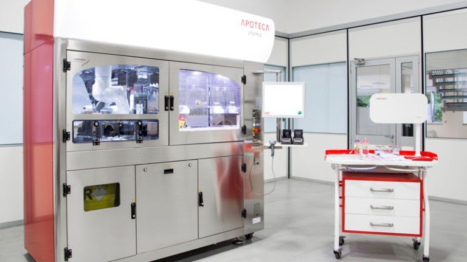
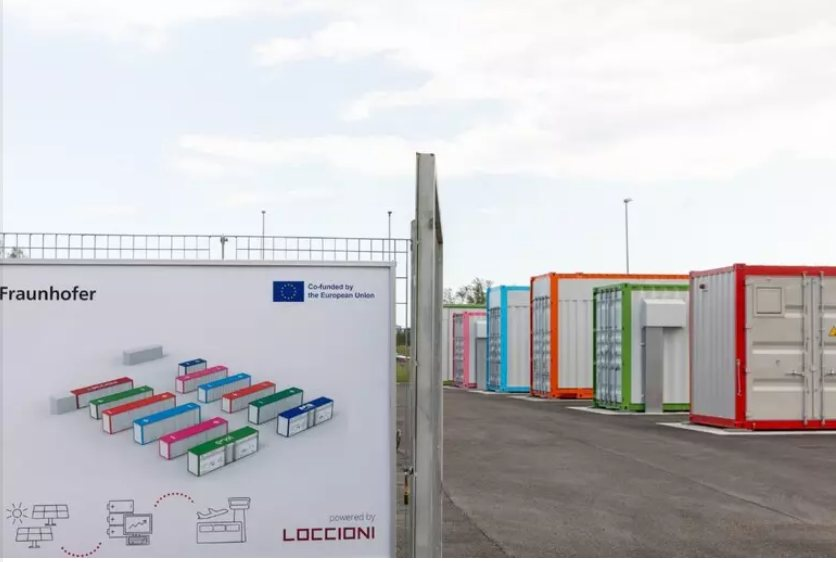
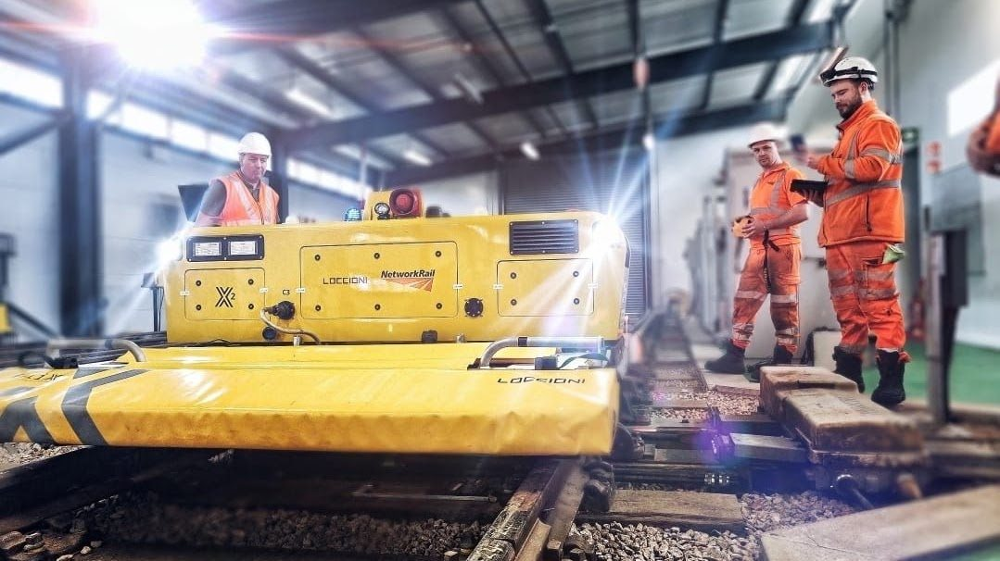
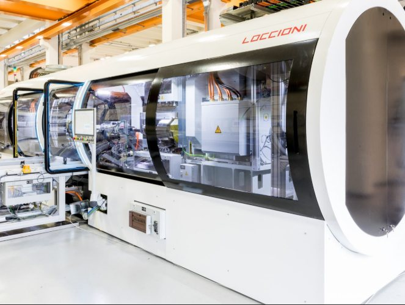
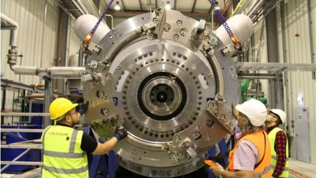
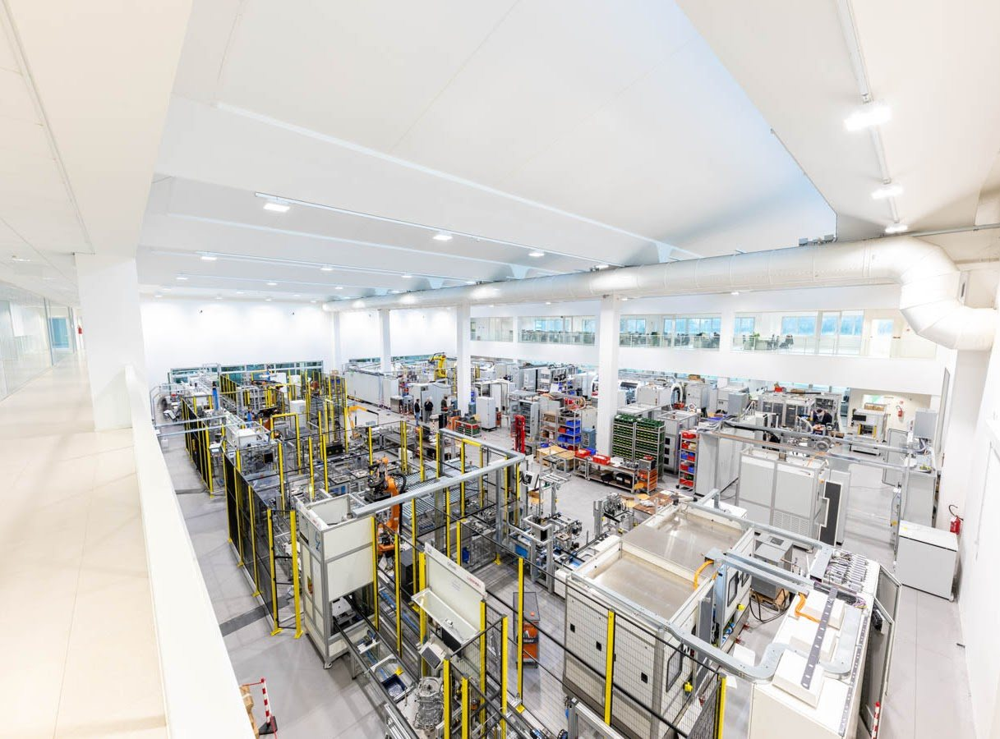

Apoteca
The APOTECA department focuses on the development of robotic systems that automate the preparation of injectable and hazardous drugs in hospital pharmacies. These systems aim to improve patient safety, protect operators, ensure full traceability and quality control, and streamline the overall workflow of medical preparation environments.
Read about my experience in APOTECA →
Railway
The Railway department is dedicated to objectifying the measurement of railway infrastructure, especially in high-risk areas like track switches. Here, Loccioni developed a robot called Felix, which moves autonomously on railway tracks and uses advanced vision systems and sensors to detect wear, deformation, and misalignment. Through a neural network, it can identify anomalies that might compromise safety. Clients in this sector include RFI (the Italian railway system), Adif, Network Rail, and TMB.


Automotive
In the automotive sector, the Powertrain department develops validation and test benches for clients such as Mercedes, Audi, Volvo, Ferrari, and Lamborghini. These benches assess the production and performance of components like fuel injectors under both real and simulated conditions.
Power generation
The Powergen department focuses on improving and monitoring energy production from natural gas, coal, and nuclear power. It develops emission monitoring systems for incoming and outgoing gases in power plants operated by major companies like General Electric, Baker Hughes, and EDF. One of the most significant recent projects involves monitoring the new Hinkley Point C nuclear power plant in Bristol for the client EPR.


Aviation
In the Aviation department, Loccioni works with major clients including Avio Aero, GE Aerospace, Leonardo, and Airbus, developing test benches for mechanical components in aircraft and helicopters, as well as systems for testing hydrogen combustion.
Home
The Home department specializes in research and development test labs and end-of-line test benches for household appliances, working with clients such as Bosch, De'Longhi, and Haier.

← Back to Experience